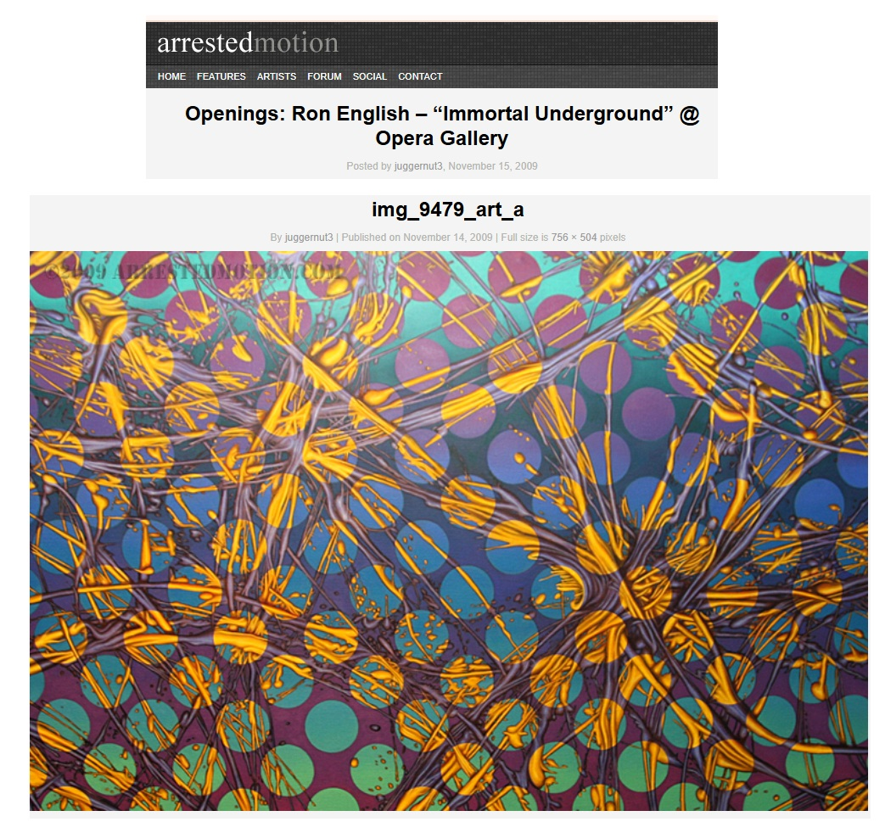

Exhibitions
Immortal Underground, Opera Gallery, New York, New York, US, November 2009.
Ron English: The Secret History of Beacon Bigfoot, Ethan Cohen Gallery, New York, New York, US, August 6–December 22, 2022.
Notes
This work appears in installation photographs published in “Openings: Ron English – “Immortal Underground” @ Opera Gallery,” Arrested Motion, November 15, 2009, available here, accessed April 10, 2026.
Ancillary Documentation
